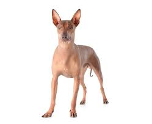

Perro Peruano

Origen
El viringo peruano, perro peruano sin pelo, perro calato, perro chimú o viringo es una raza de perro sin pelo originaria del Perú, empleada usualmente como animal de compañía. Ha sido reconocido oficialmente como Patrimonio del Perú.
Caracteristicas
- Estos perros pueden medir hasta 65 cm y pesar 25 kg.
- Perro grande.
- Perro expresivo y ladrador.
- Se requiere un adiestramiento básico.
- Le gustan los paseos enérgicos.
Personalidad
Noble, Afectuoso y Guardián.